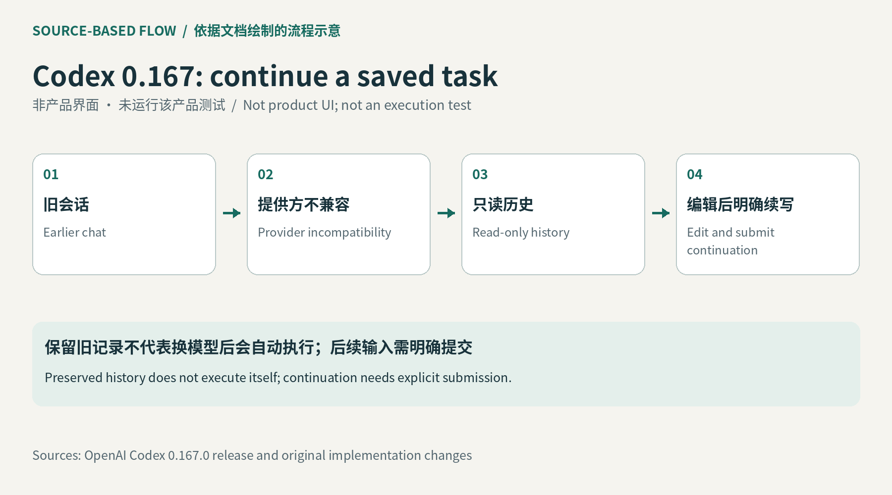

旧任务留在选择器里
开发者换了模型提供方，旧聊天却从选择器消失，会把配置问题误认为工作丢失。此次修订让恢复入口跨提供方查找会话；若新的提供方不接受该会话，界面仍展示只读记录，解释失败原因，并提供继续、新建或返回选择器的动作。继续并不会偷偷发送整段历史，而是准备一条可编辑的提示。用户有机会删去旧假设、补上当前代码状态，再决定是否发出要求。这个细节直接影响上下文交接中的责任：能看见旧记录，与已经恢复同一执行过程，是两个不同状态。
Codex CLI 0.167.0 · 开发工具／官方发布与文档

开发者换了模型提供方，旧聊天却从选择器消失，会把配置问题误认为工作丢失。此次修订让恢复入口跨提供方查找会话；若新的提供方不接受该会话，界面仍展示只读记录，解释失败原因，并提供继续、新建或返回选择器的动作。继续并不会偷偷发送整段历史，而是准备一条可编辑的提示。用户有机会删去旧假设、补上当前代码状态，再决定是否发出要求。这个细节直接影响上下文交接中的责任：能看见旧记录，与已经恢复同一执行过程，是两个不同状态。
图像缩略图解决的是另一个很小却常见的输入错误：附件名称相近，开发者直到模型回答才发现发错截图。相关实现按照引用顺序预览本地图片，空间不足时保留溢出提示，不支持的终端仍能使用可编辑引用。图片替换或删除也需要刷新预览，避免旧画面让人误判实际发送内容。预览不是视觉识别正确率的保证，但让用户在请求产生费用、代码开始修改之前发现材料不对。对比测试可以刻意放入同名不同图、方向不同的截图，检查预览与实际附件是否始终对应。
稳定版的代理中心可以在不启用守护进程时运行，并突出未读结果；批准补丁时也能展开差异。这些入口减少来回找输出的动作，但代理中心不能代替验收。开发者仍应逐项确认哪个任务完成、哪个只留下建议，以及批准的具体修改是否与眼前文件一致。把多个任务聚到同一窗口时，最容易被忽略的是未读与未完成的差别：一个结果已经生成却没人看，和运行本身尚未结束，需要不同提醒。这里讨论的是界面与恢复增量，不是模型能力升级或更高代码正确率。
采用前可以保留一组已完成与中断的会话，在不同提供方配置下复查草稿、只读历史和续写入口。特别要检查恢复提示是否误把旧结论当成当前事实，取消后是否还会自动发送，以及退出批准后画面是否留下不对应的图像。本文没有运行这些测试，也没有核算模型用量费用。若修订确实让人更快找到材料、少重写上下文，并减少误发请求，收益才体现在任务完成过程；如果开发者仍需靠记忆重建每一步，界面上的恢复按钮就不足以解决交接问题。